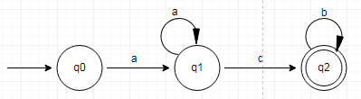
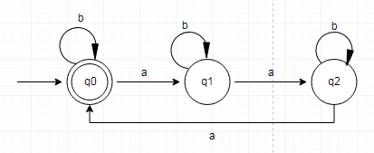
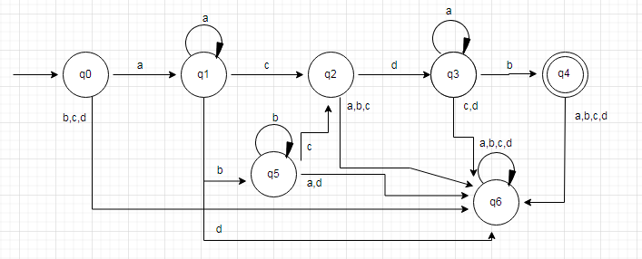
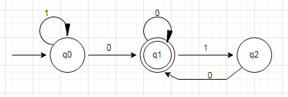
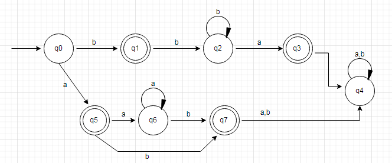
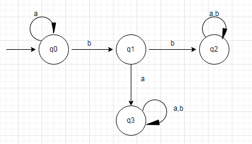
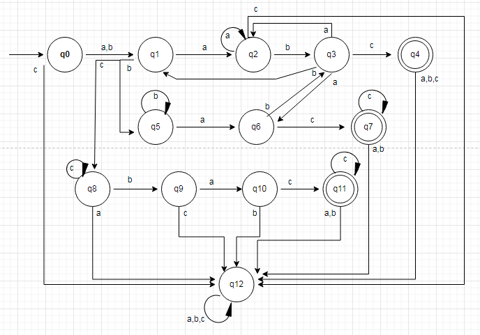
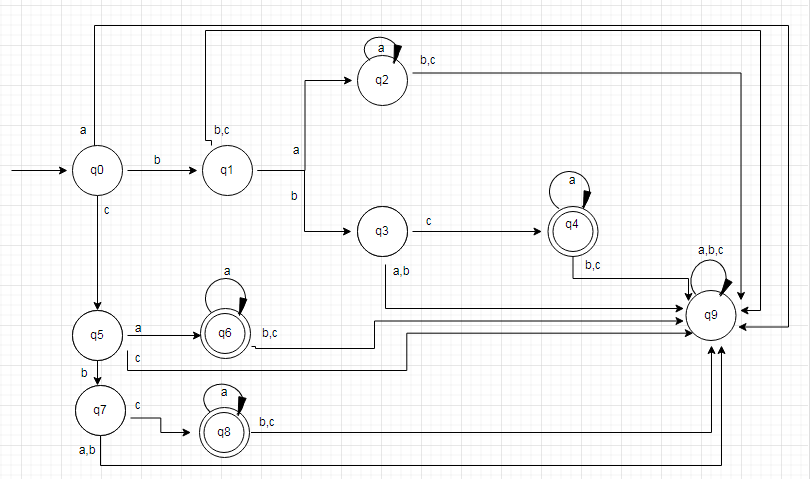

EJEMPLOS
1. ¿Cuál es la cerradura de kleene de A={a,bb}?
R\. A*= A0 U A1 U A2 U A3 U ... An
A*={E} U {a,bb} U {aa,abb,bba,bbbb} U {aaa,aabb,abba,abbbb,bbaa,bbabb,bbbba,bbbbbb} ...
A*={E, a, bb, aa, abb, bba, bbbb, aaa, aabb, abba, abbbb, bbaa, bbabb, bbbba, bbbbbb ...}
- ¿Cuál es la cerradura de kleene de B={0,11}
R\. B*={E, 0, 11, 00, 011, 110, 1111, 000, 0011, 0110, 01111, 1100, 11011, 11110, 111111}
B+={0, 11, 00, 011, 110, 1111, 000, 0011, 0110, 01111, 1100, 11011, 11110, 111111}
2. Dado el conjunto C={a,aba,abba} indique hasta C2 en la cerradura de kleene:
R\. C*={E, a, aba,abba, aa, aaba, aabba, aaba, abaaba, abaabba, aabba, abaabba, abbaabba}
3. Dado el alfabeto {0,1} definir los siguientes lenguajes regulares:
-Lenguaje que tiene la cadena 11:
R\. L1={0U1}* {11} {OU1}*
-Lenguaje que inicia en 1, tiene la cadena 11 y termina en 00:
R\. L2={1} {0U1}* {01} {0U1}* {00}
4. Interprete el tipo de palabras que pertenecen al siguiente lenguaje:
L={a}*{b}*
R\. Cadenas que tienen 0 o más a's seguidas de 0 o más b's
5. Sea A={0,11} y B={00,01} encuentra cada conjunto
a. AB R\. {000, 001, 1100, 1101}
b. A2 R\. {00, 011, 110, 1111}
6. Dada la expresión regular E=0*10*, obtenga el lenguaje que representa:
R\.
L= {0}*{1}{0}* = {0n10m | n,m >= 0}
7. Determine si la cadena 11101 esta en estos conjuntos
- {0,1}*
R\. Si
- {11}{0}*{01}
R\. No
8. Describa en palabras las cadenas de los siguientes conjuntos regulares:
-1*0
R\. Cualquier numero de 1's seguido de un 0
-(1 U 00)*
R\. Una cadena de cualquier numero de 1's o 00's
-(0 U 1) (0 U 1)* 00
R\. Una cadena de al menos 3 caracteres que termine en 00
9. Exprese cada uno de estos conjuntos mediante una expresión regular
-El conjunto formado por las cadenas 0, 11 y 010
R\. 0U11U010
-El conjunto de cadenas de tres 0's seguidos de dos o mas 0's
R\. 000000*
10. Indique las expresiones regulares que describen los siguientes idiomas.
L := {w ∈ {a, b}∗ | la subcadena ab aparece exactamente dos veces en w, pero no al final}
R\. b∗a+b+a+b(b+a∗+b∗a+)
11. Diseñe el autómata finito determinístico que acepta el lenguaje L1 = {ancbm / n>0 y m≥0 }
R\.
12. Para el lenguaje dado sobre Σ = {a, b}, construir una expresión regular de él y un Autómata Finito que lo acepte:
L={ w | w tiene un numero múltiplo de 3 de a′s }
R\. Una expresión regular para este lenguaje es: b∗(ab∗ab∗a)∗.
El diagrama de transición de un Autómata Finito es:
13. Diseñe un autómata finito determinista para reconocer cadenas de la forma a+b*cda*b

14. Diseñar el AF sobre Σ={0,1} que reconozca en binario el lenguaje de todos los múltiplos de 2.

15. Diseñe un autómata finito determinista para reconocer cadenas de la forma a*b*Ub*a*
16. Diseñe un autómata finito determinista para reconocer cadenas de la forma a*bb (a U b)*
17. Diseñe un AFD Σ={a,b,c} que reconozca (a U b)+ (abc U (c)* ba (c)+)

18. Diseñe un autómata finito determinista para reconocer cadenas de la forma (b U c) (a+ U bca*)

19. ¿Cuál de las siguientes expresiones regulares NO es equivalente a la expresión regular (a + b + c)*?
a. (a* + b* + c*)*
b. (a B C*)*
c. ((ab)* + c*)*
d. (a*b* + c*)*
R\. La expresión regular que no es equivalente es la C, ya que siempre generará cadenas con "ab" juntas.
20. Determine cual de las expresiones regulares es adecuada para el idioma que tiene los alfabetos de entrada a y b, en el que dos a no se juntan:
(A) (b + ab)* + (b +ab)*a
(B) a(b + ba) )* + (b + ba)*
R\. Ambas opciones (A) y (B) son expresiones regulares correctas para el alfabeto, ya que ambas pueden iniciar por a por b y dos a no se juntaran.